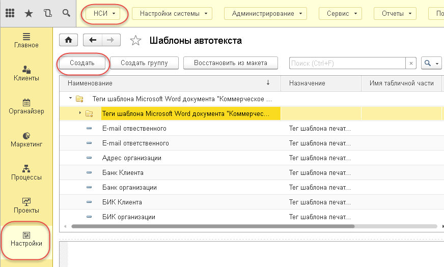
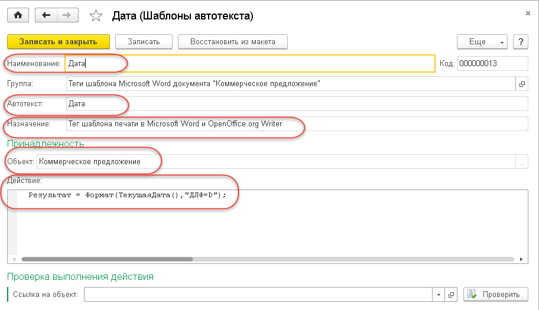
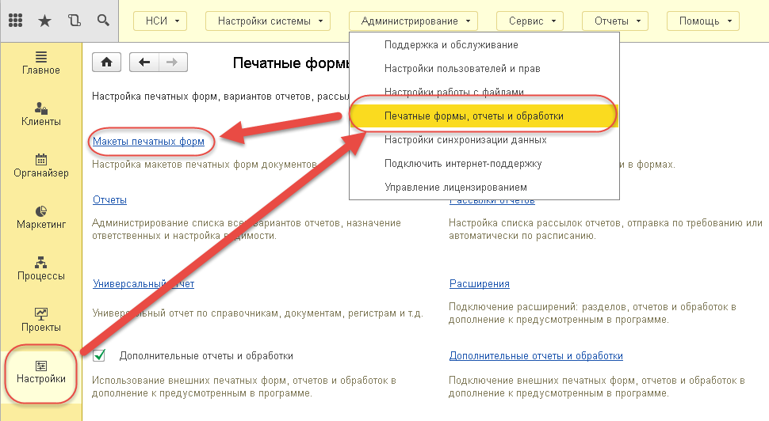
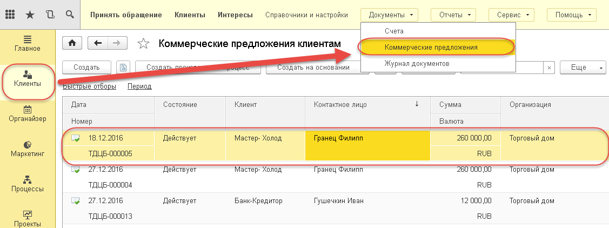
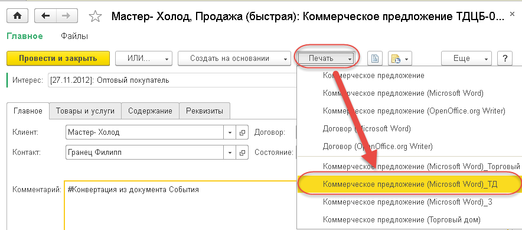
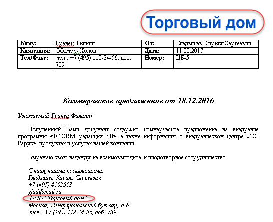

Часто возникает необходимость быстрого создания высылаемого коммерческого предложения или договора на основании подготовленных шаблонов в формате MS Word и на основе данных хранящихся в 1С: CRM. Это может быть договор, коммерческое предложение и прочие документы имеющие сложное форматирование, которое можно легко сделать в программе MS Word. Для реализации данного действия в решении 1С: CRM используются макеты печатных форм, созданные из шаблонов MS Word. В дистрибутив 1С: CRM уже входит 2 печатные формы для документа "Коммерческое предложение" (ШаблонКоммерческогоПредложения.doc и ШаблонДоговораИзКоммерчес когоПредложения.doc). Остановимся подробнее на подготовке шаблона коммерческого предложения.
В шаблоне коммерческого предложения MS Word используются так называемые "теги", которые создаются в справочнике "Шаблоны автотекста". Тегом называется название переменной заключенная в специальные символы. При формировании печатной формы программа выполняет поиск по всем таким переменным и подставляет вместо них данные, которые соотвсетвуют переменной. таким образом формируется текст в который подставляютя данные, выбранные ранее в документе. В 1С: CRM уже имеются теги, поставляемые в решении по умолчанию. В тоже время есть возможность изменить или добавить собсвтенные теги для дальнейшего их использования при формровании печтаных форм. Перейдем в раздел «Настройки» - «НСИ» - «Шаблоны автотекста» и для создания тега зайдем в группу «Теги шаблона Microsoft Word документа "Коммерческое предложение"» и нажмем кнопку «Создать».

В открывшейся форме необходимо указать следующие данные:
Примечание: Для корректного заполнения данных по переменной в поле Действие необходимо иметь компетенции по программированию в среде 1С:Предприятие 8. Для отладки написанного кода в карточке тега расположена группа "Проверка выполнения действия".

После того как все нужные теги будут созданы нужно открыть шаблон печатной формы, который был в составе дистрибутива и отредактировать его под себя. Поставляемые шаблоны находятся в папке установки релиза решения. Например, путь может быть таким "...tmplts\Rarus\CRM\3_0_2_2\ШаблоныПечати", где "...tmplts" - это путь по котором ранее был установлен дитсрибутив релиз 1С: CRM 3.0.2.2.
Внимание! Рекомендуется редактировать именно готовый шаблон, а не создавать новый файл. Это связано с тем, что в шаблоне также имеется готовая структура документа в которую помещаются теги. При копировании только части этой структуры теги могут не отрабатывать.
Пример редактирования шаблона
Добавим поставлеямом шаблоне картинку в правом верхнем углу вместо названия организации. А внизу после Ответственного и перед телефоном организации вставим название организации.

Сохраняем и закрываем. Теперь необходимо добавить эту печатную форму к документу "Коммерческое предложение". Для этого переходим в раздел «Настройки» - «Администрирование» - «Печатные формы, отчеты и обработки» и выбираем пункт «Макеты печатных форм».

В списке для создания макета печатной формы нажимаем кнопку «Добавить». В открывшейся форме в полях:

И нажать кнопку «Ок». Теперь для проверки необходимо открыть документ "Коммерческое предложение". Для этого перейдем в раздел «Клиенты» - «Документы» - «Коммерческие предложения» и откроем нужный.

В меню «Печать» выберем добавленную ранее печатную форму (добавленные печатные формы располагаются внизу списка под чертой).

После формирования печатной формы откроем её и увидим, что все указанные теги заполнились.
